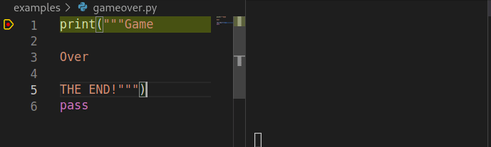
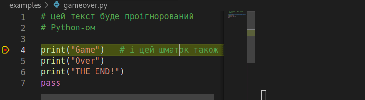

<!doctype html>
<html lang="en">
 <head>
  <meta charset="utf-8">
  <title>Тема 1</title>
  <meta name="description" content="Опис тексту">
  <meta name="author" content="Автор">
  <meta name="apple-mobile-web-app-capable" content="yes">
  <meta name="apple-mobile-web-app-status-bar-style" content="black-translucent">
  <meta name="viewport" content="width=device-width, initial-scale=1.0">
  <link rel="stylesheet" href="revealjs/dist/reset.css">
  <link rel="stylesheet" href="revealjs/dist/reveal.css">
  <link rel="stylesheet" href="revealjs/dist/theme/moon.css" id="theme">
  <!-- Theme used for syntax hirevealjs/ghlighting of code -->
  <link rel="stylesheet" href="revealjs/plugin/highlight/zenburn.css">
 </head>

 <body>
  <div class="reveal">
   <!-- Any section element inside of this container is displayed as a slide -->
   <div class="slides">
    <section data-markdown><script type="text/template">
# Markdown

---

З печерних часів люди 

завжди цікавились, як вивести 
<!-- .element: class="fragment" data-fragment-index="0" --> 

## **текст в термінал**
<!-- .element: class="fragment" data-fragment-index="1" --> 

---

### І як це зробити в Python?

Наприклад, як вивести на екран "Game Over"?


---

<section>

# Це легко!


```python3[]
print("Game Over")
```
<!-- .element: style="width:60%; font-size:40px" -->

Скроль вниз щоб подивитись інші способи.

⇩
<!-- .element: style="font-size:150px" -->

</section><section>

# Або так

```python3 []
print("Game", "Over")
```
<!-- .element: style="width:60%; font-size:40px" -->
</section><section>

# Або так

```python3 []
print('Game Over')
```
<!-- .element: style="width:60%; font-size:40px" -->

</section><section>

# Або так

```python3 []
print('Game', 'Over')
```
<!-- .element: style="width:60%; font-size:40px" -->
</section><section>


# Або так

```python3 []
text = "Game Over"
print(text)
```
<!-- .element: style="width:60%; font-size:40px" -->
</section><section>


# Або так

```python3 []
text1 = "Game"
text2 = "Over"
print(text1, text2)
```
<!-- .element: style="width:60%; font-size:40px" -->
</section><section>


# Або так

```python3 []
word1 = "Game"
word2 = 'Over'

print(word1, word2)
```
<!-- .element: style="width:60%; font-size:40px" -->
</section><section>


# Або так

```python3 []
over = "Over"
game = "Game"

print(game, over)
```
<!-- .element: style="width:60%; font-size:40px" -->
</section><section>


# Або так

```python3 []
# Юзер програв, кінець гри
print("Game Over")
```
<!-- .element: style="width:70%; font-size:40px" -->
</section><section>


# Або так

```python3 []
# Тут я створюю змінну
t = "Game Over"

# А тут я її напишу на екран
print(t)
```
<!-- .element: style="width:90%; font-size:40px" -->
</section><section>


# Або так

```python3 []
message = "Game Over"  # фінальне 
                       # повідомлення юзеру
print(message)
```
<!-- .element: style="font-size:30px" -->

---

# І які тут правила?

---

## Є 2 типи правил

* Це правила ЗАПИСУ ✍️

  Чи **правильно** записана програма.
<!-- .element: class="fragment" data-fragment-index="0" --> 

* І правила ВИКОНАННЯ <span style="color:green;border:2px solid white">⧐</span>

  **Що** станеться, коли запустити програму.
<!-- .element: class="fragment" data-fragment-index="1" --> 

---

### Чи можна порушувати правила?

## NO ❌
<!-- .element: class="fragment r-fit-text" data-fragment-index="0" --> 

---

### А якщо я все-таки порушу правила запису?

Програма не запуститься ❌
<!-- .element: class="fragment r-fit-text" data-fragment-index="0" --> 

---

### ... порушу правила виконання?

Програма запуститься, але потім закрешится 
і тобі розгрібати наслідки 
<!-- .element: class="fragment r-fit-text" data-fragment-index="0" --> 


---

<section>

## Правило 1

Один рядок програми --- одна команда.

```python3 [1|2|3]
word1 = "Game"
word2 = "Over"
print(word1, word2)
```

(але з цього правила є винятки ⇩)
<!-- .element: style="font-size:20px; color:#666666" -->

</section><section>

Можна записати дві або більше команди в один рядок, якщо розділити їх крапка-з-комою `;`

```python3 []
word1 = "Game"; word2 = "Over"; print(word1, word2)
```

Не зловживайте цим!

</section>
---

<section>

## Правило 2

Python виконує програму зверху вниз. Спочатку виконається рядок 1, потім рядок 2, потім рядок 3

```python3 [1|2|3]
word1 = "Game"
word2 = "Over"
print(word1, word2)
```

(але з цього правила є винятки ⇩)
<!-- .element: style="font-size:20px; color:#666666" -->
</section><section>

Кілька спеціальних конструкцій створені для зміни порядку виконання команд. 
</section><section>
В цьому прикладі спочатку виконається рядок 5, потім рядок 6, а потім рядок 2.
<br/>


І про це поговоримо пізніше.

</section>


---

<section>

## Правило 3

Python ігнорує порожні рядки.


(але з цього правила є винятки ⇩)
<!-- .element: style="font-size:20px; color:#666666" -->
</section><section>

В цьому випадку порожні рядки БУДУТЬ враховані




</section>
---

## Правило 4

Python ігнорує рядок, якщо він починаються з `#`. Та ігнорує текст після `#` і до кінця рядка




---

Рядки, які починаються з `#`, називаються

## Коментарі
<!-- .element: class="r-fit-text" -->

Особисто я їх також називаю "коменти", "рядки на ігнорі", "відключені рядки".

---

<section>

### І їх треба писати у двух випадках:

Щоб відключити частину коду (щоб не виконувалась)
<!-- .element: class="fragment r-fit-text" data-fragment-index="0" --> 

Щоб описати людськими словами, що цей говнокод робить.
<!-- .element: class="fragment r-fit-text" data-fragment-index="1" --> 
</section>

<section>

До-речі, літературний термін

## говнокод
<!-- .element: class="r-fit-text" -->

означає "код програми, яку писала людина або тварина, не думаючи, і не думаючи про наслідки своєї творчості".

</section>

---

## Правило 5

Слідкуй, щоб текст був вирівняний по лівому краю. І щоб не було лишніх пробілів.

<table>
<tr>
<th>❌ Погано</th>
<th>❌ Погано</th>
<th>✅ Добре</th>
</tr>
<tr><td>

```python3[]
 print("Game")
print("Over")
print("THE END!")
```
</td><td>

```python3[]
 print("Game")
 print("Over")
 print("THE END!")
```
</td><td>

```python3[]
print("Game")
print("Over")
print("THE END!")
```
</tr>
<tr><td>
лишній пробіл
</td><td>
лишній пробіл на кожному рядку
</td><td>
немає лишніх пробілів
</td></tr>
</table>

---


Big
<!-- .element: class="r-fit-text" -->


    </script></section>
   </div>
  </div>

   <script src="revealjs/dist/reveal.js"></script>
   <script src="revealjs/plugin/zoom/zoom.js"></script>
   <script src="revealjs/plugin/notes/notes.js"></script>
   <script src="revealjs/plugin/search/search.js"></script>
   <script src="revealjs/plugin/markdown/markdown.js"></script>
   <script src="revealjs/plugin/menu/menu.js"></script>
   <script src="revealjs/plugin/highlight/highlight.js"></script>
   <script>
    // Also available as an ES module, see:
    // https://revealjs.com/initialization/
    Reveal.initialize({
        controls: true,
        progress: true,
        center: true,
        hash: true,
        menu: {
            themes: true,
            sticky: true,
            themesPath: 'revealjs/dist/theme/'
        },

        // Learn about plugins: https://revealjs.com/plugins/
        plugins: [ RevealZoom, RevealNotes, RevealSearch, RevealMarkdown, RevealHighlight, RevealMenu ]
    });
  </script>
 </body>
</html>
